Armpit Kingdom

Armpit Kingdom explores the possibility of using human pheromones as chemosensory signals to communicate and interact, drawing on the long-standing use of pheromones by animals to coexist with nature. It imagines a society in which communication is revolutionised by the scientific discovery and application of human pheromones. We call this world Armpit Kingdom.
In this fictional society, pheromones, closely linked to the chemical signals of armpit odour, are celebrated as vital to social interaction, including intimacy. Traditional concepts of gender and sexual orientation are abandoned, and people embrace their olfactory instincts to form new ways of being.
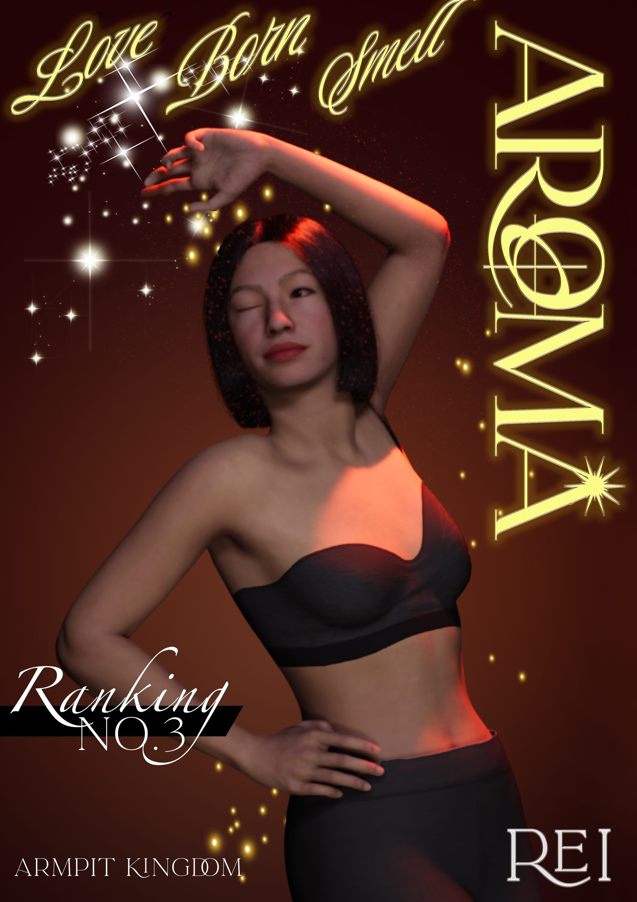
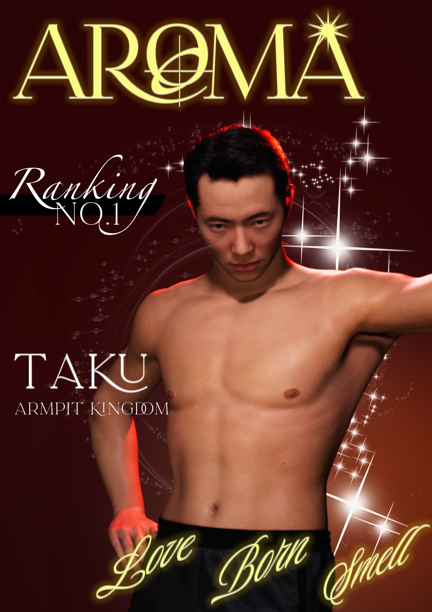
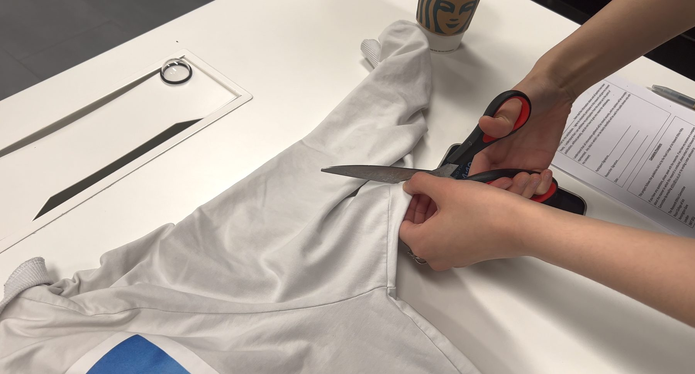
Intimacy in Armpit Kingdom takes its cue from Japanese host club culture. The project envisions a virtual dating experience at Aroma Club, where visitors step away from visually driven social norms and choose with their noses.
Smell samples were collected from worn clothing and presented in dishes beneath the poster of each host, so that every character in the virtual club could also be met as a scent.
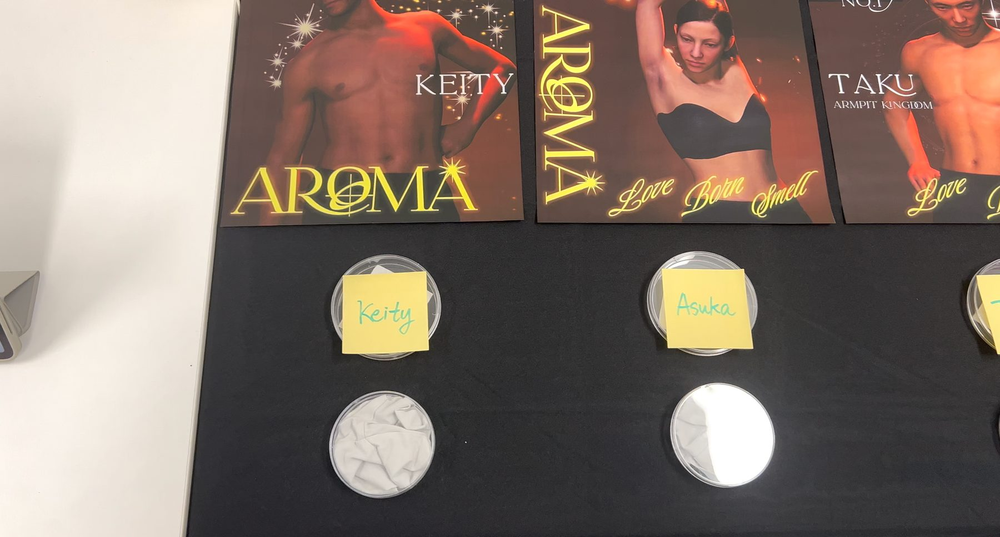
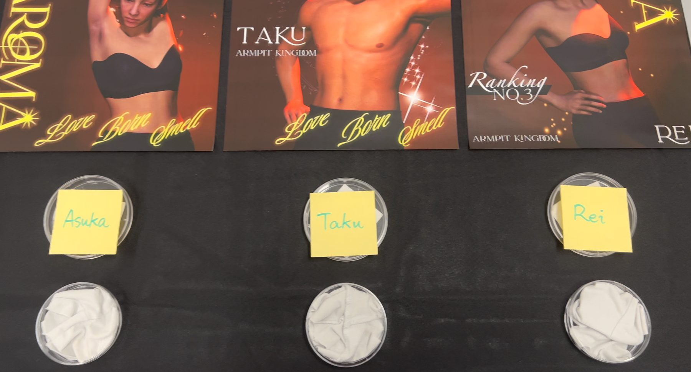
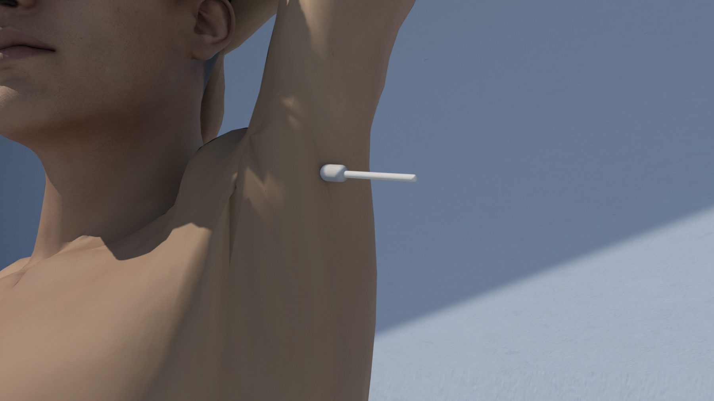
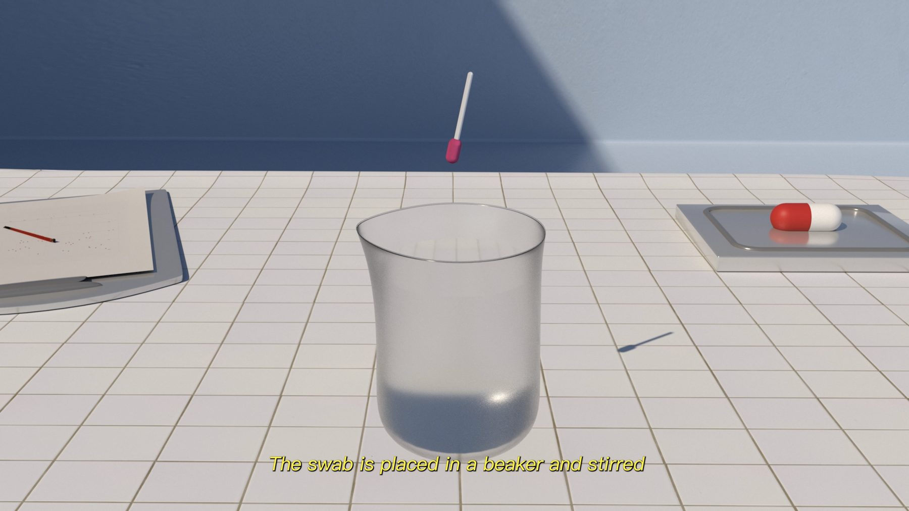
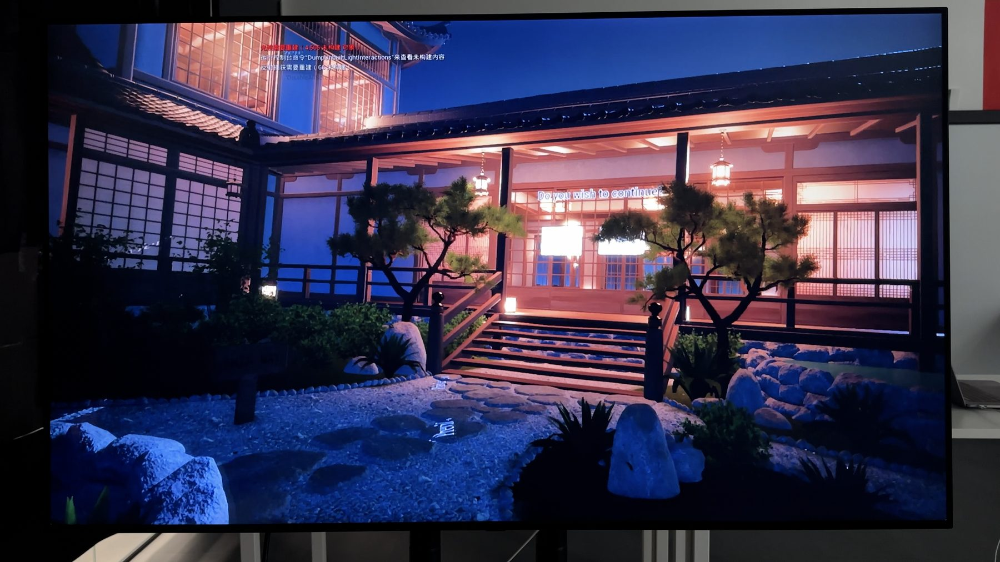
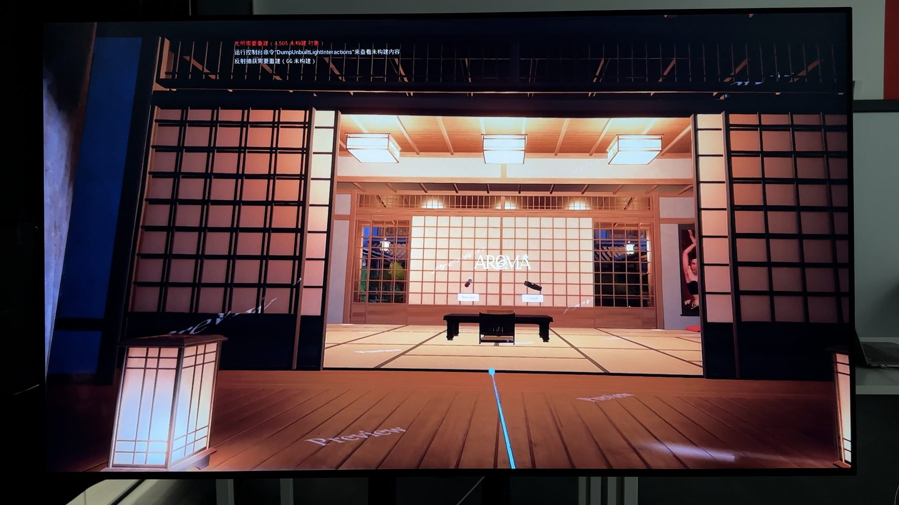
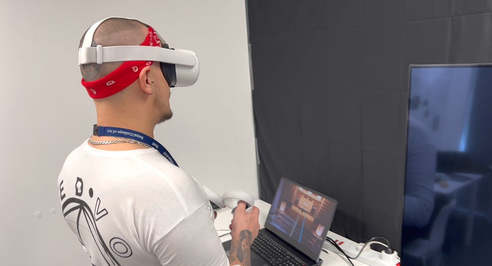
Through this immersive experience the study critically examines the role of scent in modern society and its ties to consumerism and gender bias. It imagines the kind of society that might emerge if we embraced our olfactory instincts without the influence of normative social values.
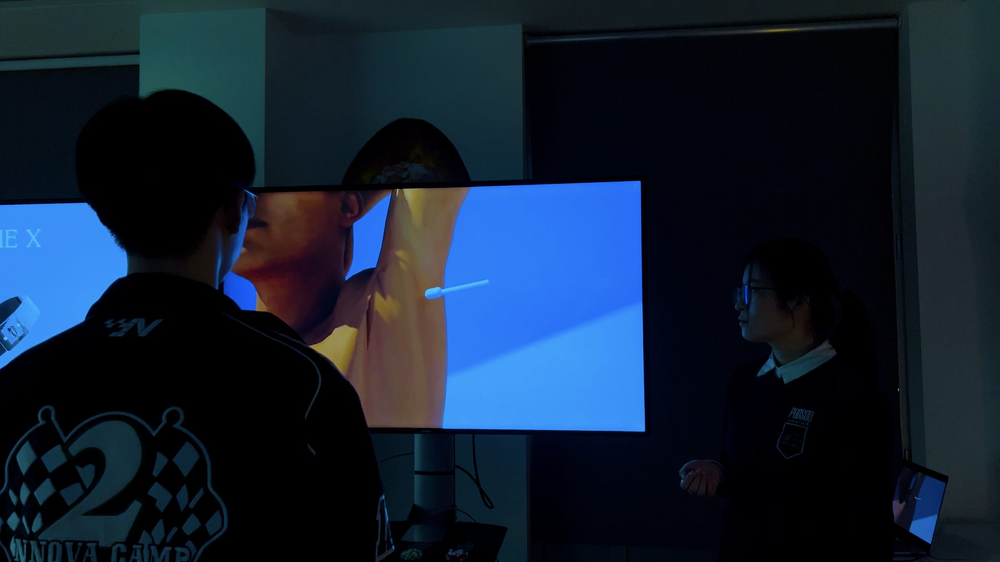
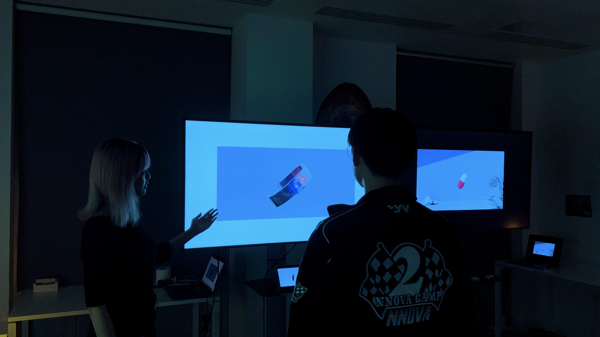
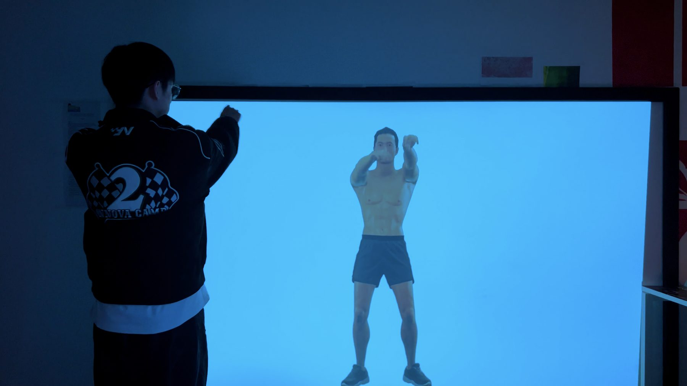
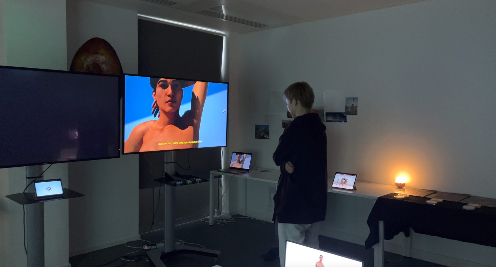
Credits
- Artists
- Jimmy Chen, Jing Sun, Shihui Liu
- VR environment and interaction design
- Jimmy Chen
- Animation
- Jing Sun
- Graphic design
- Shihui Liu